<!DOCTYPE html>
<html lang="ja">
  <meta http-equiv="content-type" charset="UTF-8">
  <meta name="viewport" content="width=device-width,initial-scale=1.0">
  <link rel="stylesheet" href="article.css">
  <link rel="preconnect" href="https://fonts.gstatic.com">
  <link href="https://fonts.googleapis.com/css2?family=Bodoni+Moda:wght@400;500&display=swap" rel="stylesheet">
  <link href="https://fonts.googleapis.com/css2?family=Noto+Serif+JP:wght@400;600&display=swap" rel="stylesheet">
  <script type="text/x-mathjax-config">
    MathJax.Hub.Config({
      tex2jax: {
        inlineMath: [['$','$'], ["\\(","\\)"]]
      }
    });
    MathJax.Hub.Config({
      TeX: {
        Macros: {
          Set: "{\\mathbf{Set}}",
          Hom: "{\\mathrm{Hom}}",
        }
      }
    });
  </script>
  <script type="text/javascript"
    src="https://cdnjs.cloudflare.com/ajax/libs/mathjax/2.7.0/MathJax.js?config=TeX-AMS_CHTML">
  </script>
  <title>Category</title>
</html>

<body>
<div class="wrap">
  <header>
    <span class="title-str">Category</span>
    <div class="minibox">
      <time datetime="2021-1-19" itemprop="datepublished">Date : 2021/01/19</time>
    </div>
  </header>


  <div class="wrapper">
    <aside>
      <div class="Table">
        <p class="toc">Table of Contents</p>
        <p class="chap">Chapter 1.</p>
        <ol>
          <li><a href="#category">1.1 圏と関手</a></li>
          <li><a href="#morphism">1.2 射と関手の諸性質</a></li>
          <li><a href="#natural">1.3 自然変換</a></li>
          <li><a href="#universal">1.4 表現可能関手と普遍射</a></li>
          <li><a href="#limit">1.5 極限</a></li>
          <li><a href="#adjoint">1.6 随伴</a></li>
        </ol>
      </div>
    </aside>

    <main>
      <p class="Chapter">Chapter 1.</p>

      <!-- Section1.1 -->
      <p class = "sec"><a id="category">1.1 圏と関手</a></p>
      <section>
        <span class="sec_name">1.1.1 圏の定義</span>
        <p><strong>圏</strong> $C$ を次のように定義する．</p>
        <ul>
          <li> $C$ は2つの集まり $\mathrm{Ob}(C)$ と $\mathrm{Mor}(C)$ の組である．$\mathrm{Ob}(C)$ の元を<b>対象</b>， $\mathrm{Mor}(C)$ の元を<b>射</b>という．</li>
          <li>各 $f \in \mathrm{Mor}(C)$ に対して対象 $\mathrm{dom}(f) \in \mathrm{Ob}(C)$ と対象 $\mathrm{cod}(f) \in \mathrm{Ob}(C)$ が定められている．前者を<b>ドメイン</b>，後者を<b>コドメイン</b>といい，このとき $f : a\to b$ とかく．</li>
          <li>2つの $C$ の射 $f: a\to b,\ g:b\to c$ に対して新しい射 $g \circ f: a\to c$ が定められている． $g \circ f$ を $f$ と $g$ の<b>合成射</b>という．</li>
          <li>3つの $C$ の射 $f:a \to b,\ g:b \to c,\ h:c \to d$ に対して $(h\circ g)\circ f = h\circ (g\circ f)$ が成り立つ．</li>
          <li>各 $c \in \mathrm{Ob}(C)$ に対して射 $\mathrm{id}_c : c\to c$ が存在し，任意の $C$ の射 $f : a\to b$に対し$f\circ \mathrm{id}_a = f,\ \mathrm{id}_b \circ f = f$ が成り立つ．</li>
        </ul>
        <p>以後，簡単のために $a \in \mathrm{Ob}(C)$ を $a \in C$，$f \in \mathrm{Mor}(C)$ を $f \in C$ とかくこともある．</p>
      </section>
      <section>
        <span class="sec_name">1.1.2 関手の定義</span>
        <p> $C,D$ を圏とする． $C$ から $D$ への<strong>関手</strong> $F : C \to D$ を次のように定義する．</p>
        <ul>
          <li> $F$ は $a \in \mathrm{Ob}(C)$ に対し $F(a) \in \mathrm{Ob}(D)$ ， $f \in \mathrm{Mor}(C)$ に対し $F(f) \in \mathrm{Mor}(D)$ を対応させる関数である．</li>
          <li> $f : a\to b$のとき，$F(f) : F(a) \to F(b)$である．</li>
          <li> $\mathrm{cod}(f) = \mathrm{dom}(f)$ のとき $F(g\circ f) = F(g) \circ F(f)$ である．
          <li> $a \in C$ に対して $F(\mathrm{id}_a ) = \mathrm{id}_{F(a)}$ である．
      </section>
      <section>
        <span class="sec_name">1.1.3 圏の例</span>
        <ul>
          <li>集合を対象，その関の写像を射とすれば圏になる．この圏を $\mathbf{Set}$ とかく．</li>
          <li>対象をただひとつ $*$ のみとし，射も $\mathrm{id}_*$ のみとすれば圏になる．この圏を $\mathbf{1}$ とかく．</li>
          <li> $X$ を集合としたとき， $\mathrm{Ob}(\widetilde{X}) = X$ で射を恒等射のみとすれば， $\widetilde{X}$ は圏になる．集合はこの方法で圏とみなす．</li>
        </ul>
      </section>

      <!-- Section1.2 -->
      <p class = "sec"><a id="morphism">1.2 射と関手の諸性質</a></p>
      <section>
        <span class="sec_name">1.2.1 同型射</span>
        <p> $C$ を圏， $a,b \in C$ とする．</p>
        <ul>
          <li> $C$ の射　$f: a\to b$ が<strong>同型射</strong> $\iff$ ある射 $g: b\to a$ が存在して $g \circ f = \mathrm{id}_a,\ f \circ g = \mathrm{id}_b$ を満たす．</li>
          <li> $a$ と $b$ が<strong>同型</strong> $\iff$ ある同型射 $f:a\to b$ が存在する．</li>
        </ul>
      </section>
      <section>
        <span class="sec_name">1.2.2 モノ射とエピ射</span>
        <p> $C$ を圏， $f : a\to b$ を $C$ の射とする．</p>
        <ul>
          <li> $f$ が<strong>モノ射</strong> $\iff$ 任意の対象 $c \in C$ と 任意の射 $g, h: c\to a$ に対し，$f\circ g = f\circ h$ ならば $g=h$ ．<div class="image">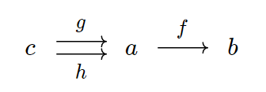</div></li>
          <li> $f$ が<strong>エピ射</strong> $\iff$ 任意の対象 $c \in C$ と 任意の射 $g, h: b\to c$ に対し，$g\circ f = h\circ f$ ならば $g=h$ ．<div class="image">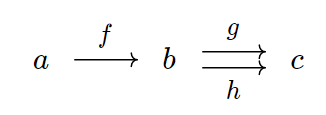</div></li>
        </ul>
      </section>
      <section>
        <span class="sec_name">1.2.3 忠実関手と充満関手</span>
        <p> $C, D$ を圏， $F: C\to D$ とする．</p>
        <ul>
          <li> $F$ が<strong>忠実</strong> $\iff$ 任意の $a,b \in C$ に対し，$F: \mathrm{Hom}_C (a,b) \to \mathrm{Hom}_D (Fa, Fb)$ が単射．</li>
          <li> $F$ が<strong>充満</strong> $\iff$ 任意の $a,b \in C$ に対し，$F: \mathrm{Hom}_C (a,b) \to \mathrm{Hom}_D (Fa, Fb)$ が全射．</li>
        </ul>
      </section>

      <!-- Section1.3 -->
      <p class = "sec"><a id="natural">1.3 自然変換</a></p>
      <section>
        <span class="sec_name">1.3.1 自然変換の定義</span>
        <p> $C, D$ を圏， $F, G: C\to D$ を関手とする． $F$ から $G$ への<strong>自然変換</strong>を次のように定義する．また，このとき $\theta : F \Rightarrow G$ とかく．</p>
        <ul>
          <li> $D$ の射の族 $\theta = \{ \theta_a : Fa \to Ga \}_{a \in C}$ である．</li>
          <li> $C$ の射 $f : a \to b$ に対して $Gf \circ \theta_a = \theta_b \circ Ff$ を満たす，すなわち次の図式が可換となる．<div class="image">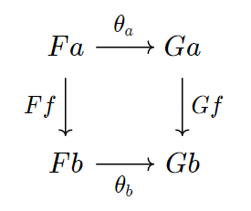</div></li>
        </ul>
      </section>
      <section>
        <span class="sec_name">1.3.2 圏同値</span>
        <ul>
          <li>自然変換 $\theta$ が<b>自然同型</b> $\iff$ 各 $\theta_a$ が同型射となる．</li>
          <li>関手 $F, G:C \to D$ が<b>自然同型</b> $\iff$ 自然同型 $\theta : F \Rightarrow G$ が存在する．</li>
        </ul>
      </section>
      <section>
        <span class="sec_name">1.3.3 自然変換の合成</span>
        <ul>
          <li> $C, D$ を圏， $F, G, H: C \to D$ を関手， $\theta: F \Rightarrow G,\ \sigma : G \Rightarrow H$ を自然変換とする．<div class="image">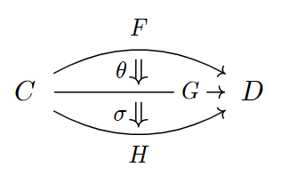</div>このとき， $a \in C$ に対して $(\sigma \circ \theta)_a = \sigma_a \circ \theta_a$ と定義すれば，自然変換 $\theta, \sigma$ を合成した新しい自然変換 $\sigma \circ \theta : F\Rightarrow H$ が得られる．これを<b>垂直合成</b>という．<div class="image">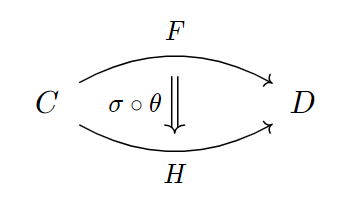</div></li>
          <li> $A, B, C$ を圏， $F, G:A\to B$ と $H: B\to C$ を関手， $\theta: F\Rightarrow G$ を自然変換とする．<div class="image">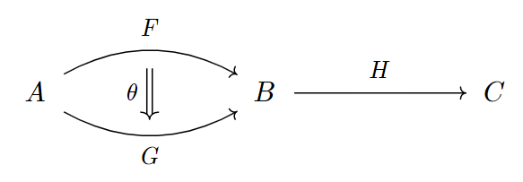</div>このとき， $ a\in A$ に対して $(H\theta )_a = H(\theta_a)$ と定義すれば，新しい自然変換 $H\theta : HF \Rightarrow HG$ が得られる．<div class="image">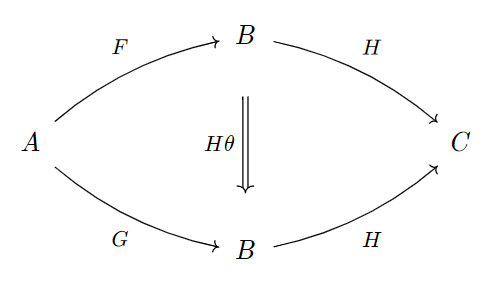</div></li>
          <li> $A, B, C$ を圏， $F:A\to B$ と $G, H: B\to C$ を関手， $\theta: G\Rightarrow H$ を自然変換とする．<div class="image">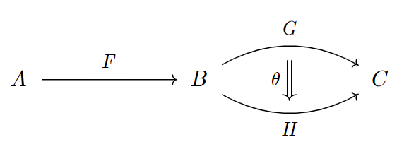</div>このとき， $ a\in A$ に対して $(\theta_F )_a = \theta_{Fa}$ と定義すれば，新しい自然変換 $\theta_F : GF \Rightarrow HF$ が得られる．<div class="image">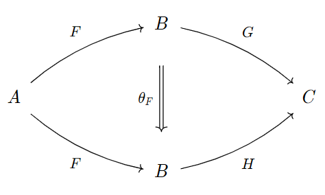</div></li>
        </ul>
      </section>
      <section>
        <span class="sec_name">1.3.4 関手圏</span>
        <p> $C, D$ を圏とする．このとき， $C$ から $D$ への関手とその間の自然変換がなす圏 $D^C$ が次のように定義できる．</p>
        <ul>
          <li> $\mathrm{Ob}(D^C)$ を $C$ から $D$ への関手全体とする．</li>
          <li> $F, G \in \mathrm{Ob}(D^C)$ に対して， $F$ から $G$ への射を自然変換 $F \Rightarrow G$ とする．</li>
          <li> 射の合成を垂直合成とする．</li>
          <li> $F \in \mathrm{Ob}(D^C)$ に対し，恒等射 $\mathrm{id}_F : F\Rightarrow F$ を $(\mathrm{id}_F)_a = \mathrm{id}_{Fa}$ と定義する．</li>
        </ul>
      </section>
      <section>
        <span class="sec_name">1.3.5 関手圏の間の関手</span>
        <p> $F: C\to D$ を関手， $M$ を圏とする．</p>
        <ul>
          <li> $F : \mathrm{Ob}(C^M) \to \mathrm{Ob}(D^M) $ を $F(G) = FG$ で定義し， $\theta: G\Rightarrow H$ に対して $F(\theta) = F\theta$ と定義すれば， $F$ は関手 $F : C^M \to D^M$ を定める．<div class="image">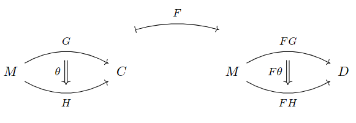</div></li>
          <li> $F^{-1} : \mathrm{Ob}(M^D) \to \mathrm{Ob}(M^C)$ を $F^{-1}(G) = GF$ で定義し， $\theta: G\Rightarrow H$ に対して $F^{-1}(\theta) = \theta_F$ と定義すれば，関手 $F^{-1} : M^D \to M^C$ が定まる．<div class="image">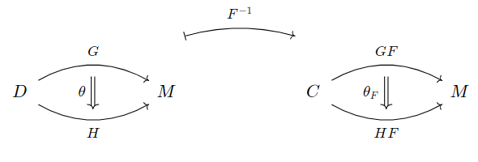</div></li>
        </ul>
      </section>
      <section>
        <span class="sec_name">1.3.6 その他関手圏について</span>
        <ul>
          <li> $C, D$ を圏とする．一意に存在する関手$ u: C \to \mathbf{1}$から関手 $ u^{-1} : D = D^{\mathbf{1}} \to D^C$ が得られる．これを<strong>対角関手</strong>といい， $\Delta$ とかく．すなわち，対角関手 $\Delta : D\to D^C$ は次のような関手である．
            <ul>
              <li> $a \in D$ に対し，$ \Delta a$ は次のような関手 $\Delta a : C \to D$ である．
                <ul>
                  <li> $c \in C$ に対し $\Delta a(c) = a$ ．</li>
                  <li> $f \in \mathrm{Mor}(C)$ に対し $\Delta a(f) = \mathrm{id}_a$ ．</li>
                </ul>
                <div class="image">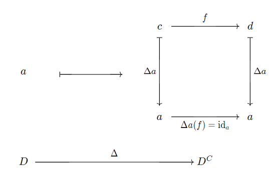</div>
              </li>
              <li> $f : a\to b$ に対し， $\Delta f$ は次のような自然変換 $\Delta f : \Delta a \Rightarrow \Delta b$ である．
                <ul>
                  <li> $c \in C$ に対し $(\Delta f)_c = f$ ．</li>
                </ul>
                <div class="image">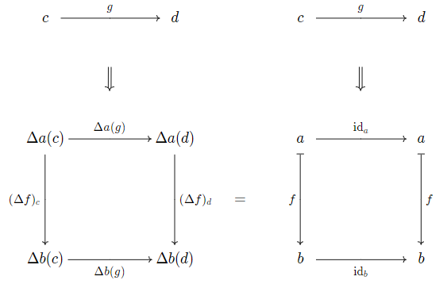</div>
              </li>
            </ul>
          </li>
          <li>全単射 $\mathrm{Hom}_{\mathbf{Cat}}(A \times B, C) \cong \mathrm{Hom}_{\mathbf{Cat}}(A, C^B)$ が存在する．すなわち，関手 $T : A\times B \to C$ と関手 $\widetilde{T} : A \to C^B$ は一対一に対応する．</li>
        </ul>
      </section>
      <section>
        <span class="sec_name">1.3.7 $\mathrm{Hom}$ 関手</span>
        <p> $C$ を圏， $a, b \in C$ とする．</p>
        <ul>
          <li> $F : \mathrm{Ob}(C) \to \mathrm{Ob}(\Set)$ を $b \mapsto \Hom_C (a,b)$ で定義し， $C$ の射 $g: b \to b'$ に対して写像 $F(g) = \Hom_C (a, b) \to \Hom_C (a, b')$ を $h \mapsto g \circ h$ と定義すれば， $F$ は関手 $F : C \to \Set$ を定める．この $F$ を $\Hom_C (a, -)$ とかき，<strong>Hom関手</strong>という．写像 $\Hom_C (a, g)$ を単に $g \circ -$ とかくことにする．<div class="image">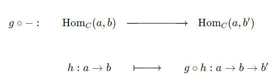</div></li>
          <li> 圏 $C^{op}$ を考えると関手 $\Hom_{C^{op}} (a, -) : C^{op} \to \Set$ が得られるが， $\Hom_{C^{op}}(a, b) = \Hom_{C}(b,a)$ であったから $\Hom_{C}(-, a) = \Hom_{C^{op}}(a, -)$ とかく．<div class="image">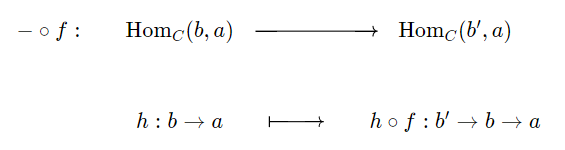</div></li>
          <li> 射 $f:a'\to a$ と $g:b\to b'$ に対して<div class="image">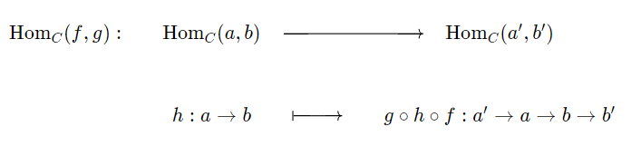</div>と定義すれば， $\Hom_C$ は関手 $\Hom_C : C^{op} \times C \to \Set$ となる．</li>
          <li> 1.3.6より，関手 $\Hom_C : C^{op} \times C \to \Set$ に対応する関手 $y : C \to \Set^{C^{op}} $ が存在する．圏 $C$ に対して $\widehat{C} = \Set^{C^{op}}$ とかき，この関手 $y : C \to \widehat{C} $ を<strong>米田埋込</strong>という．米田埋込は次のような関手である．
            <ul>
              <li> $a\in C$ に対し $y(a) = \Hom_{C}(-,a)$ である．</li>
              <li> $C$ の射 $f: a\to b$ に対し $y(f) : y(a) \Rightarrow y(b)$ であり，これは $s \in C$ に対して $y(f)_s = f\circ - : \Hom_C (s,a) \to \Hom_C (s, b)$ で与えられる自然変換である．</li>
            </ul>
          </li>
        </ul>
      </section>
      <section>
        <span class="sec_name">1.3.8 米田の補題</span>
        <p> $C$ を圏，$a\in C$，$P \in \widehat{C}$ とする．このとき，全単射 $\Hom_{\widehat{C}}(\Hom_{C}(-,a), P) \cong P(a)$ が存在する．双対を考えれば，$P \in \Set^C$ に対して全単射 $\Hom_{\Set^C}(\Hom_{C}(a,-), P) \cong P(a)$ が存在する．</p>
        <details>
          <summary>証明の概略</summary>
          <ol>
            <li>写像 $\phi : \Hom_{\widehat{C}}(y(a), P) \to P(a)$ を $\alpha \in \Hom_{\widehat{C}}(y(a), P)$ に対し $\phi(\alpha ) = \alpha_a (\mathrm{id}_a)$ で定める．</li>
            <li> $x \in P(a)$ に対し，写像 $\psi(x)_s : \Hom_{C}(s, x) \to P(s)$ を $\phi$ の逆写像となるように $\psi(x)_s (f) = Pf(x)$ と定める．</li>
            <li> $\psi(x)_s$ が自然変換 $\psi(x) : y(a) \Rightarrow P$ を与えること，すなわち $\psi(x)_s$ が $s$ について自然であることを示す． $P$ が関手であることを用いるとわかる．</li>
            <li> $\psi$ が $\phi$ の逆写像であること，すなわち $\phi \circ \psi = \mathrm{id}$ と $\psi \circ \phi = \mathrm{id}$ が成り立つことを示す．前者は $\phi$ と $\phi$ の定義からすぐわかり，後者は $\alpha$ が自然変換であることを用いるとわかる．</li>
          </ol>
        </details>
        <p> 米田の補題（とその系）は非常に重要であり，頻繁に使用される．</p>
      </section>
      <section>
        <span class="sec_name">1.3.9 米田の補題の系</span>
        <p> $C$ を圏，$a, b \in C$ とする．</p>
        <ul>
          <li> 米田埋込 $y : C\to \widehat{C}$ は忠実充満である．</li>
          <li> 米田の補題の全単射は $a$ について自然であり，自然同型 $\Hom_{\widehat{C}}(y(-), P) \cong P$ を定める．
          <li> $x \in C$ について自然に $\Hom_C(x, a) \cong \Hom_C(x, b)$ なら，$a \cong b$である．</li>
          <li> $x \in C$ について自然に $\Hom_C(a, x) \cong \Hom_C(b, x)$ なら，$a \cong b$である．</li>
        </ul>
      </section>

      <!-- Section1.4 -->
      <p class = "sec"><a id="universal">1.4 表現可能関手と普遍射</a></p>
      <section>
        <span class="sec_name">1.4.1 コンマ圏</span>
        <p> $A, B, C$ を圏，$K : A\to C,\ L:B\to C$ を関手とする．このとき，<strong>コンマ圏</strong> $K \downarrow L$ を次のように定義する．
        <ul>
          <li>
            $K \downarrow L$ の対象を組 $(a, b, f)$ であり以下を満たすものとする．
            <ul>
              <li> $a \in \mathrm{Ob}(A)$．</li>
              <li> $b \in \mathrm{Ob}(B)$．</li>
              <li> $f : Ka \to Lb$ は $C$ の射．</li>
            </ul>
          </li>
          <li>
            $K \downarrow L$ の射 $(a,b,f) \to (a', b', f')$ を組 $(g, h)$ であり以下を満たすものとする．
            <ul>
              <li> $g : a \to a'$ は $A$ の射．</li>
              <li> $h : b \to b'$ は $B$ の射．</li>
              <li> $Lh \circ f = f' \circ Kg$ ．</li>
            </ul>
            <div class="image">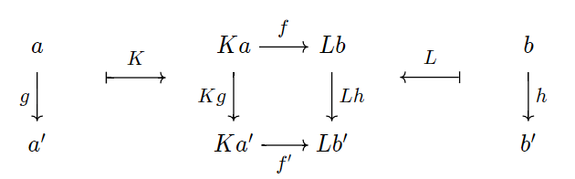</div>
          </li>
        </ul>
        また，対象 $c \in C$ に対して $c$ を関手 $ c : \mathbf{1} \to C$ とみなしたときのコンマ圏を $c \downarrow K,\ K \downarrow c$ のようにかく．
      </section>
      <section>
        <span class="sec_name">1.4.2 普遍射</span>
        <p> $C, D$ を圏，$G : D \to C$ を関手，$c \in C$ とする．このとき，</p>
        <ul>
          <li> コンマ圏 $c \downarrow G$ の始対象 $(d, f)$ を，$c$ から $G$ への<strong>普遍射</strong>という．</li>
          <li> コンマ圏 $G \downarrow c$ の終対象 $(d, f)$ を，$G$ から $c$ への<b>普遍射</b>という．</li>
        </ul>
      </section>
      <section>
        <span class="sec_name">1.4.3 表現可能関手</span>
        <p> 関手 $F : C \to \Set$ が<strong>表現可能関手</strong> $\iff$ ある $c \in C$ と自然同型 $ F \cong \Hom_C(a,-)$ が存在する．</p>
      </section>
      <section>
        <span class="sec_name">1.4.4 表現可能であるための必要十分条件</span>
        <p> $\alpha : \Hom_C(a,-) \Rightarrow F$ を自然変換，$x \in Fa$ を米田の補題により $\alpha$ に対応する元とする．このとき，</p>
        \begin{align*}
          \alpha \textrm{が同型} \iff (a, x) \textrm{がコンマ圏}\ 1 \downarrow F \textrm{の始対象となる．}
        \end{align*}
      </section>
      <section>
        <span class="sec_name">1.4.5 表現可能関手と普遍射の関係</span>
        <ul>
          <li>
            $G : D \to C$ を関手，$c \in C$ とする．このとき，
            \begin{align*}
              c\ \textrm{から}\ G\ \textrm{への普遍射が存在} \iff \Hom_C(c, G(-))\ \textrm{が表現可能関手．}
            \end{align*}
          </li>
          <li>
            $F : C \to D$ を関手，$d \in D$ とする．このとき，
            \begin{align*}
              F\ \textrm{から}\ d\ \textrm{への普遍射が存在} \iff \Hom_D(F(-), d)\ \textrm{が表現可能関手．}
            \end{align*}
          </li>
        </ul>
        <details>
          <summary>証明</summary>
          <p> 1つ目を示せば2つ目は双対により明らか．$F = \Hom_C(c, G(-))$ とおけば，コンマ圏の定義より $1 \downarrow F = c \downarrow G$ であるから，</p>
          <p> $F$ が表現可能</p>
          <p> $\iff$ $1 \downarrow F$ が始対象を持つ</p>
          <p> $\iff$ $c \downarrow G$ が始対象を持つ</p>
          <p> $\iff$ $c$ から $G$ への普遍射が存在 </p>
        </details> 
      </section>
      <!-- Section1.5 -->
      <p class = "sec"><a id="limit">1.5 極限</a></p>

      <!-- Section1.6 -->
      <p class = "sec"><a id="adjoint">1.6 随伴</a></p>
    </main>
  </div>


  <footer>
    <small>&copy;&nbsp;2021&nbsp;Re-menal</small>
  </footer>
</div>
</body>
